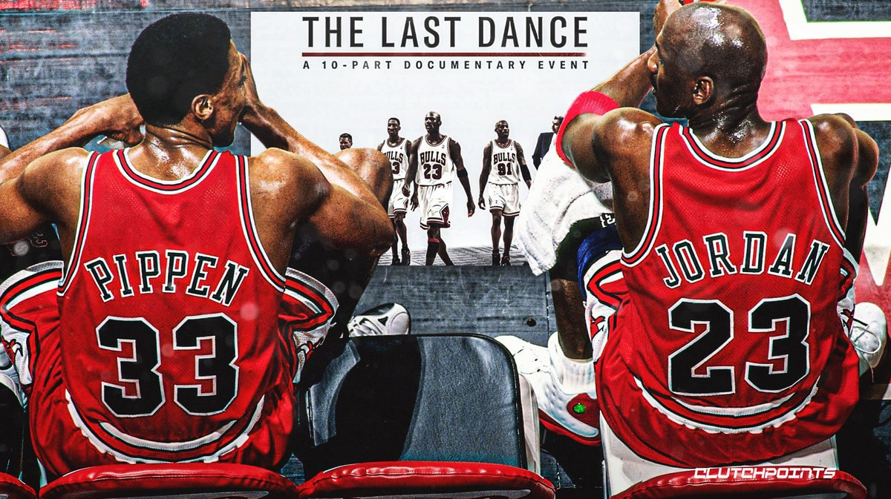
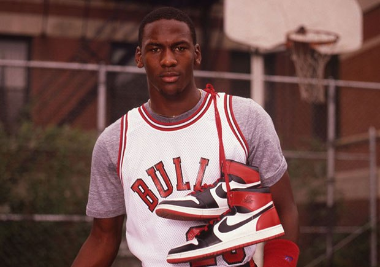
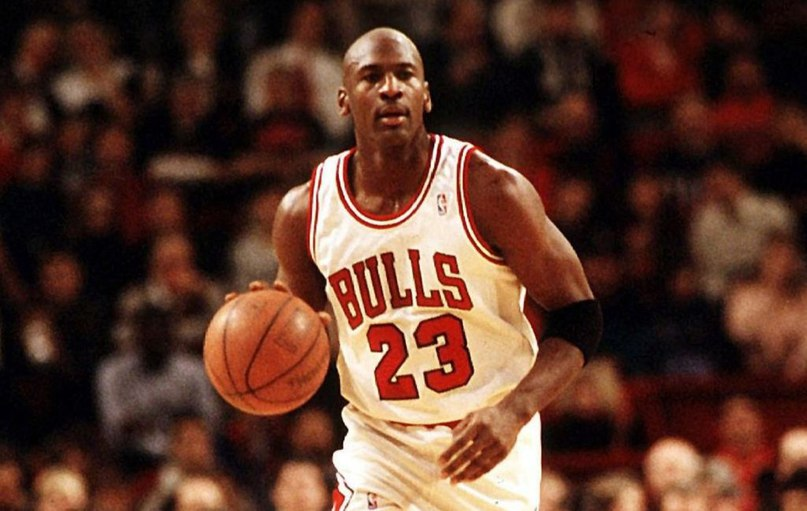
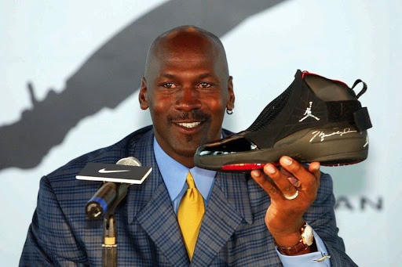

Історія бренду AIR JORDAN
Якщо ви не дивилися «Останній танець», документальний серіал ESPN з 10 частин про кар'єру Майкла Джордана в «Чикаго Буллз», що ж, ви багато пропустите. Навіть не будучи спортивним фанатиком (я б вважав себе дилетантом), мені дуже сподобалося дізнаватися більше про культового спортсмена, його легендарну кар'єру і, звичайно ж, його знамениті кросівки Nike. П'ятий епізод присвячений історії Air Jordan, одній із найвідоміших моделей взуття в історії.
Як створювався Air Jordan?
Ці кросівки народилися після підписання контракту 1984 року. На той час Converse були офіційними кросівками НБА. Компанія сказала йому, що не може ставити Джордана вище за інших спонсорованих ними спортсменів, у тому числі таких гравців, як Ларрі Берд і Меджік Джонсон, тому Джордан вирішив не співпрацювати з ними.

Його улюбленим взуттям на той час були Adidas, але бренд сказав йому, що на той час вони просто не могли змусити взуття працювати так, як потрібно на майданчику. Агент Джордана, Девід Фальк, хотів, щоб він перейшов до компанії Nike, яка на той час була більше відома своїм спортивним взуттям, але Джордана це не цікавило.
Тому Фальк звернувся до матері Джордана, Делоріс. «Моя мама сказала: «Ти підеш вислухати пропозицію, тобі це може не сподобатися, але ти підеш послухати», – згадує Джордан. Nike запропонувала йому дуже багато, нечуване для новачка, і його батько сказав, що він повинен бути дурнем, щоб не прийняти їхні умови. І врешті-решт він погодився.

Як Air Jordan отримав свою назву?
Звідти все було зосереджено на тому, щоб Джордан отримав своє іменне взуття. «Nike щойно представила цю нову технологію для своїх кросівок, яка називається повітряною підошвою», - каже Фальк. "І, очевидно, Майкл грав у повітрі, тому я сказав: "Я зрозумів, ми назвемо це Air Jordan"".
"Коли ми підписували угоду, Nike очікувала, що наприкінці четвертого року вони сподіваються продати Air Jordan на 3 мільйони доларів", - згадує Фальк. "У перший рік ми продали на 126 мільйонів доларів".
Как Air Jordan стали культовыми?
Як свідчить легенда, НБА фактично заборонила першу версію Джорданов - Майкла, заявивши, що вони порушили правило ліги, згідно з яким кросівки мають бути в основному білими та відображати кольори футболки команди. Повідомляється, що Джордан був оштрафований на 5000 доларів за кожну гру, в якій він носив заборонені кросівки Air Jordan 1, а компанія Nike виплачувала штрафи із задоволенням використовуючи цю рекламу.
Але щодо популярності Air Jordan, решта вже історія. Взуття стало символом статусу наприкінці 80-х та 90-х роках - і сьогодні воно, як і раніше, залишається головним продуктом вуличного стилю. «Для дитини це було майже як володіння світловим мечем із «Зоряних воєн», – пояснює репер Нас у документальному фільмі. «Тобі потрібне було це взуття, щоб бути схожим на нього. Це було більше, ніж символ статусу – ти знав, що цей хлопець був тим хлопцем». Джорданс зробив кросівки частиною поп-культури.

Спадщина Jordan 1
У своїй останній грі в Медісон-Сквер-Гарден як бик Джордан вирішив одягти свої кросівки Jordan 1, перші кросівки, які він носив, щоб грати в MSG, його улюбленому місці для ігор, говорить він у документальному фільмі. Звичайно, все пішло не так, як він сподівався - "до перерви мої ноги кровоточили", - каже Джордан у документі, визнаючи, що "інновації зайняли довгий час", - але він вижив.
Air Jordan вже зазнав багатьох змін, але Air Jordan 1 залишається культовим, тому оригінальна версія все ще провадиться сьогодні. І після перегляду «Останнього танцю» я вже думаю про вкладення в пару своїх Джорданів.
